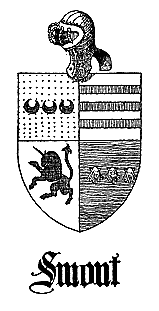

|
WILLIAM SMUTE
1
WHETHER William Smute was born in Scotland,
on the Continent, or in England
is an unsolved question at the writing of these chronicles, but we do know that
his birth occurred about the year 1596/7. In his late teens he was apprenticed
to a boatwright who trained him in that craft until he obtained sufficient
perfection as to be acceptable to the guild of that industry. He selected
undoubtedly a livelihood which had been hereditary in his family, as was
customary in England and the Continent of his day, and the fact that he
aspired to be a designer and constructor of boats indicates perhaps early
days spent near the seacoast. Furthermore, the Netherlanders being among the
foremost seafaring peoples of his day, adds another thread to his Dutch origin.
Sometime during the year 1633 William Smute was in London when he, as a member
of the Boatwright Guild, agreed to perform 50 days of work in Virginia for Colonel
Thomas Burbage. It was this contract no doubt which changed his destiny from being
a progenitor of a relatively provincial family in England to one which
subsequently attained in some branches wealth and position in America.
Shortly after the year 1633 William Smute sailed from England and settled at
Hampton, York (now Elizabeth City) County. The first mention of his name in public
records is that of February 24, 1642, [See record] when he was granted for the transportation
of eight persons into Virginia "400 acres of land in the Countie of Yorke near the
head of Tymber Creek on the north side of Charles River near the land of Mr. Minifee"
Research fails to disclose the identity of the persons whom he brought into the
country, but it can be assumed that they were servants and his immediate family,
for circumstances are such that as early as 1633 he must have been the father of
several young children.
He next appears on record as "William Smote of Hampton Boatright". There from
all circumstances he maintained an establishment befitting his rank and position
in the community, and pursued his trade as boatwright, constructing with the aid of
indentures many of the watercrafts used by the early settlers. In 1644 George Codd
completed his term of servitude under William Smute, so consequently the court
ordered the granting to Codd, in accordance with the rules of indentures fulfilling
their service, "3 barrels of corn and cloathes".
William Smute fought in the campaign against the Pamunky and Chickahominy Indians,
and for his services he was granted 600 pounds
|
2
of tobacco on October 1, 1644, by the Grand Jury held at James City.1 For his
participation in one of the early Indian Wars, all of his proved male descendants
who maintain the position today of "gentlemen" are eligible to membership in the
Society of Colonial Wars in America.
Among his neighbors were Ashwell Batten, a name connected with the Smoot family by
marriage, George Menefy, Esq., and Lewis Burwell, Gent. The latter on June 12,
1648, received for the transportation of a number of inhabitants a grant of
2,350 acres of land which extended in one direction "down the river along the
land of George Menefy Esq. until it meets the land of William Smoote".
William Smoot created a number of financial obligations and appeared frequently
in court. In 1644 he acknowledged an indebtedness of 854 pounds of tobacco to
Ashwell Batten and was ordered by the court to "make payment of the said 854
pounds of tobacco with court charges to the said Ashwell Batten within five days".
On March 8, 1645, William Smoot petitioned the court to protect the property of
Joseph Hill who was indebted to him (William Smoot) against the claims of Ashwell
Batten for 850 pounds of tobacco.
In 1644 William Smoot owed Francis Morgan 1,188 pounds of tobacco. At one time
he purchased from John Davis a mill and the land on which it stood. In 1646
William Smoot sued William Broch for a debt of 600 pounds of tobacco. Shortly
after this action, William Smoot with his family departed for the Province of
Maryland.
On November 22, 1646, Robert Bouth appeared at court and "ordered an attachement
against the estate of William Smote for security of a debt of 900 1/2 bushels of
meale being due to him by bill in regard the said Smote is gon out of the Colony
to Maryland".
It seems as if William Smoot assigned his land in Virginia or parts thereof to
Edmond Peters, of Gloucester County, who was granted 442 acres on March 22, 1659,
described as follows "at the head of Timber Necke Creek 342 acres beginning at
Captain Perye's land adjoining 100 acres of his own land and running to William
Alsopp's land, 100 acres beginning on a branch of the said creek extending near
the land of Mr. Lewis Burwell, deceased, and 192 acres part of 400 acres granted
to William Smoote 24 February 1642 and assigned to the said Peters and 250 acres
for the transportation of five persons".
It is reasonable to assume that his eldest children were born on the other side,
but the fact that some of his progenies were minors when he settled in Maryland
proves that at least some were born in Virginia.
______________
1 Henning's Statues, vol. 1, p. 287.
|
3
His wife at the time of his migration to the Province was Grace ----, whom he
had married as a widow Wood, with a daughter. No record has been found of an
earlier marriage, but it is noted that the given name of Grace is missing among
the descendants of his sons.
Grace, the wife of James Atwickes and later that of Thomas Hinton, was
referred to by some of the children as "sister". She and her first
husband, however, were transported into Virginia by John Dorman, of
Northampton County, who demanded land in 1655. It is therefore a
question whether she was born Grace Wood or Grace Smoot. William Smoot,
however, did not transport her with his family in 1646, but she came
into Maryland at a later date through the activities of John Waghop who
transported her, her husband, and children--William and Jeane Atwickes.
Children of William Smoot
1. Richard Smoot married Elizabeth ----. q.v.
2. Thomas Smoot married Jane Batten. q.v.
3. Elizabeth Smoot married Humphrey Atwickes.
4. Anne Smoot, born 1640, married William Hungerford and William
Barton. Issue: William Hungerford.
5. Alice Smoot.
6. William Smoot married Jane ----. q.v.
What actuated William Smoot to change his residence from Virginia to
Maryland will perhaps always remain a subject of conjecture, but we do
have 1646 as the year in which he forsook his allegiance as a subject of
Virginia to that of a tenant or subject of Lord Baltimore. On June 12,
1647, he was granted by His Lordship's Land Office a patent for 300
acres of land near the mouth of Herring Creek, known as "Smoote" in
consideration of his own migration into the Province and the
transportation of his wife and two children (unnamed) in the year 1646.
This tract lay on the Potomac River near the mouth of Herring Creek,
east of the land of Thomas Bushnell, in the Manor of New Towne in
present St. Mary's County. It is believed that on this land he first
established his seat but eventually moved westward and settled on his
surveys around the Wicomico. He later conveyed this land to John
Co----.
Another entry shows that he was awarded a patent for 400 acres of land
originally known as "Smoothly" for the transportation of his wife Grace
and her daughter Elizabeth Wood, and his children Thomas, Richard,
Elizabeth, Anne, and Alice, and a maid servant Anne Woodnot at his own
expense from Virginia to Maryland on or about April 6, 1646. This patent
later became known as "Attwicke's Purchase" and lay on the west side of
the Wicomico. Another warrant was issued for
|
4
land on the south side of Herring Creek between the lands of Robert
Kedger and Walter Roans.
William Smoot and his son-in-law, William Hungerford, were among those
who on April 17, 1650, signed the Stone's Declaration as "We the said
Lieutenant, Council, Burgesses, and other Protestant inhabitants"
declared that they enjoyed "all fitting and convenient freedom and
liberty in the exercise of our religion under his Lordship's Government
and interest". Thus, there is evidence that William Smoot was a member
of the Established Church of England and was not in opposition to the
Roman Catholic faith of the Calverts. Until the Revolution his
descendants adhered strictly to the Anglican Church, one taking Holy
Orders and being rector of the parish at historic St. Mary's City.
On January 26, 1652, William Smoot assigned a portion of "Atwicke's
Purchase", lying next to the lands of John Hatch, to Humphrey Atwickes
and another portion to Richard Smoot. The transactions were acknowledged
by Grace Smoot his wife. In 1658 William Smoot patented 240 acres of
land on the west side of the Wicomico River known as "Smootwood", a
portion of which he subsequently assigned to William Barton. This tract
became known as "The Hills", 190 acres being later held by Walter Hanson
and 50 acres by Notley Maddox. In 1665 he transported seven persons into
Maryland for which he was granted 350 acres of land, and later an
additional six persons for which he received 300 acres. The latter he
assigned to Richard Morris.
William Smoot practised his profession in Maryland by designing and
constructing many of the early vessels used in the inter-colonial trade
between Maryland and Virginia. He built a pinnace for Ralph Beane, of
St. Mary's County, and another for Charles Calvert, Esq. In 1649 he sold
a boat to a Mr. Groffey, of Virginia. His interest was not only centered
in the construction of watercrafts but in trading as well. He at one
time purchased a boat from Governor Leonard Calvert and after using it
for a period, he sold it in the year 1647. He was in touch with people
and affairs in Virginia, and in 1651 certain business was transacted
between him and Captain Francis Morgan, of York County.
His reputation as an authority on watercrafts was recognized to the
extent that he was called upon to appraise various vessels. On September
1, 1662, "William Smoote, Carpenter, aged 65 years" deposeth upon oath
that the "ship called St. George's as she now lyes sunk in the
Wiccommico River was worth 2,000 pounds of tobacco and no more".
On January 21, 1652/3, Colonel Thomas Burbage instituted legal action
against William Smoot through the former's attorney Captain Thomas
Cornwallys, of St. Mary's City, for the alleged non-fulfillment
|
5
of the contract made in England. "Satisfaction upon a bond of £4
Sterling Entered into by the defendt about 20 years since in England . .
. for the payment of 50 days work in Virginia". William Smoot defended
himself, declaring to be 56 years of age and stating that he discharged
the contract according to conditions. The case was dismissed and William
Smoot was awarded 150 pounds of tobacco for his trouble and expense in
coming about 40 miles from his home to appear at court. At this time it
is believed he was domiciled on his estate bordering the Wicomico as the
distance from Herring Creek to St. Mary's City would appear to be
somewhat less.
William Smoote was in sympathy with Josias Fendall and consequently was
involved in the legal proceedings following his prosecution. On April
17, 1661, at the Provincial Court he was arraigned with twelve others
for "mutinously, seditiously, and the instigation of the Devil ...
assembled at the house of Josias Fendall in Charles County in February
1660, and attempted by force to rescue Josias Fendall formerly the
Governor of the Province and William Hatch Secretary". The jury returned
a verdict of "not guilty".
Grace Smoote, the wife of William, died on January 14, 1666. Inasmuch as
she was reported in the records as the "wife", William Smoote was
apparently living at that date. It is believed that he died intestate
shortly afterwards, by 1670 at the latest. No record has been found of
the appraisement of his estate nor the administration.
WILLIAM SMOOT2
(16-- - 1716)
William Smoot, the believed son of William the emigrant, remained in
Virginia or he was born after his father settled in Maryland and
returned to Virginia in early manhood. By 1672, however, he was
domiciled in Farnham Parish of Old Rappahannock (now Essex) County,
Virginia.
On December 2, 1672, he witnessed the sale of a cow sold by Edward
Wrilly to Mary Wright. The fact that he witnessed a deed in 1672 would
indicate that he had at least attained his eighteenth birthday,
consequently his birth occurred prior to the year 1654.
On January 16, 1678, he was present at the transfer of 307 acres of land
from William Fauntleroy to John Inglow. On July 4, 1681, he appointed
Alexander Newman his attorney to acknowledge the purchase of land from
William Fauntleroy.
|
6
On March 18, 1683/4, William Smoot and Jane his wife of "Parish of
Farnham, Rappahannock County" conveyed to Richard Ellet for 2,400 pounds
of tobacco 100 acres of land lying in Moratico, where Thomas Sampson was
then domiciled. The deed was witnessed by Thomas Sampson and Richard R.
Draper. About this time he settled in Durham Parish of Richmond County,
where the births of his three daughters are recorded.
Children of William and Jane Smoot
1. Mary Smoot, born Apr. 7, 1693, married Thomas, son of Thomas
and Dorothy Durham, of Durham Parish.
2. Elizabeth Smoot, born Mar. 16, 1698.
3. Anne Smoot, born Mar. 16, 1698.
Elizabeth Grady, of Richmond County, Virginia, willed to Mary Smoot "the
daughter of William Smoot" her entire landed estate, but in the event
that Mary died without issues then to William Smoot and his heirs. The
latter received all personal property and was named as executor. The
will, dated March 4, 1693/4, was not proved until November 4, 1702, by
Thomas Durham and Richard Draper.
In 1700 William Smoot "Sr.", of North Farnham Parish, Richmond County,
conveyed 60 acres of land for love and affection to Dorothy, the wife of
Thomas Durham. Jane Smoot, his wife, waived her dower rights. The
consideration for this deed of gift remains a conjecture. It is known,
however, that Dorothy Durham, the grantee, ultimately became the
mother-in-law of the grantor's daughter Mary who at that time was only
seven years of age.
The will of William Smoot was dated February 24, 1715, and proved in
Richmond County on July 4, 1716, by John Durham, Abraham Dale, and Bryan
Muckleroy. He willed his granddaughter Margaret Durham certain
personalty then to his grandson Joseph Durham. To his son-in-law Thomas
Durham, he devised certain personalty including the "bed whereon I now
lie" and a number of pieces of pewter; and to his granddaughter Sarah
Durham other articles of personal property. His wife was devised the use
of all lands and the plantation during life, then to his son-in-law and
the testator's three grandchildren.
Thomas Durham, the contingent heir after the death of the widow, died in
1735 before the division of the land, consequently on May 16, 1739, a
commission was appointed to petition the estate for the three
grandchildren--Joseph Durham, Margaret Durham who had married Dominic
Newgent, and Sarah Durham who had married William Hanks.
|